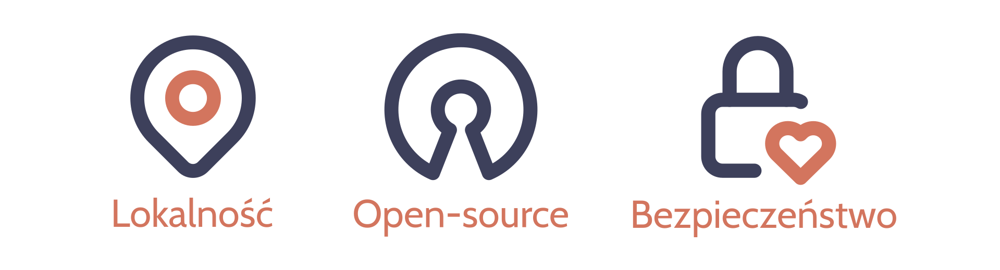

Nowatorskie rozwiązanie #
Chcemy stworzyć narzędzie, które ułatwi poznawanie nowych osób, ale z nastawieniem na zorganizowanie wspólnego spotkania poza platformą. Wbudowany w aplikację system rekomendacyjny pomoże znaleźć pobliskie wydarzenia, dopasowane do zainteresowań osób poznających się.
Naszym celem jest, aby studenci poznawali się i spotykali w rzeczywistości, a nie pozostawali w wirtualnym świecie. Nie zależy nam na utrzymywaniu użytkownika na platformie; chcemy, aby skierował uwagę na poznane osoby i zorganizował wspólne spotkania, np. w kinie, muzeum, grając w gry lub uprawiając sport.
Proponowane rozwiązanie wypełnia dotąd niezapełnione nisze, koncentrując się na budowaniu relacji między studentami. Łączenie użytkowników przypomina mechanizm aplikacji randkowych, jednak jest ukierunkowane na budowanie znajomości.
Podejście #
Stawiamy bardzo silnie na trzy komponenty: lokalność, open-source i bezpieczeństwo. 
Lokalność #
Zamiast skupiać się na globalnych sieciach, chcemy promować interakcje i wymianę informacji między ludźmi z tej samej okolicy, w celu wzmacniania więzi społecznych, wspierania lokalnych inicjatyw oraz budowania realnych relacji.
Open-source #
System i algorytm rekomendacyjny będą open-source, co pozwoli innym hostować je na własnych serwerach oraz tworzyć własne wersje aplikacji zgodnie z licencją AGPL-3.0.
Bezpieczeństwo #
Ograniczenie bazy użytkowników do studentów uczelni zwiększy ich bezpieczeństwo, ponieważ zapewni mechanizm weryfikacji, co ograniczy możliwości podszywania się oraz ataków targetowanych.